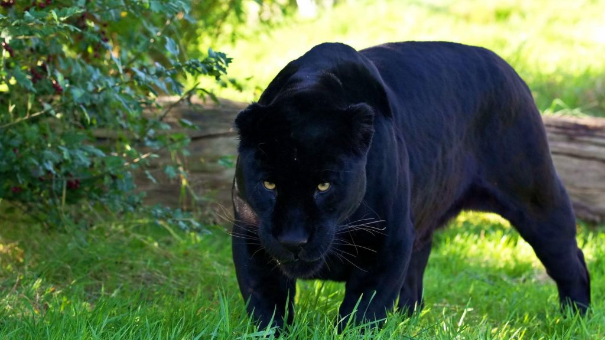
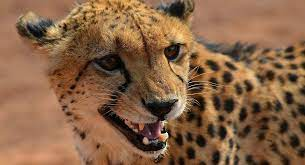
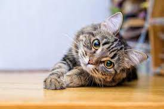

A onça-pintada (português brasileiro) ou jaguar (português europeu) (nome científico: Panthera onca), também conhecida como onça-preta (no caso dos indivíduos melânicos), é uma espécie de mamífero carnívoro da família dos felídeos (Felidae) encontrada nas Américas. É o terceiro maior felino do mundo.
Puma

A onça-parda (português brasileiro) ou puma (português europeu) (nome científico: Puma concolor), também conhecida no Brasil por suçuarana e leão-baio, é um mamífero carnívoro da família dos felídeos (Felidae) e gênero Puma, nativo da América. É o maior membro da subfamília dos felíneos (Felinae), medindo até 155 centímetros de comprimento, sem a cauda, e pesando até 72 quilos, com porte semelhante ao do leopardo (Panthera pardus), sendo o segundo maior felídeo das Américas.
Gueopardo

O guepardo ou chita (Acinonyx jubatus) é um animal da família dos felídeos (Felidae), ainda que de comportamento atípico, se comparado com outros da mesma família. É a única espécie vivente do gênero Acinonyx. Tendo como habitat a savana, vive na África, península Arábica e no sudoeste da Ásia. Também é conhecido pelos nomes de cheetah, cheetah-africana, lobo-tigre, leopardo-caçador ou onça-africana. Fisicamente, o guepardo ou chita é significativamente parecido com o leopardo.
Gato

O gato, também conhecido como gato caseiro, gato urbano ou gato doméstico, é um mamífero carnívoro da família dos felídeos, muito popular como animal de estimação. Ocupando o topo da cadeia alimentar, é predador natural de diversos animais, como roedores, pássaros, lagartixas e alguns insetos.